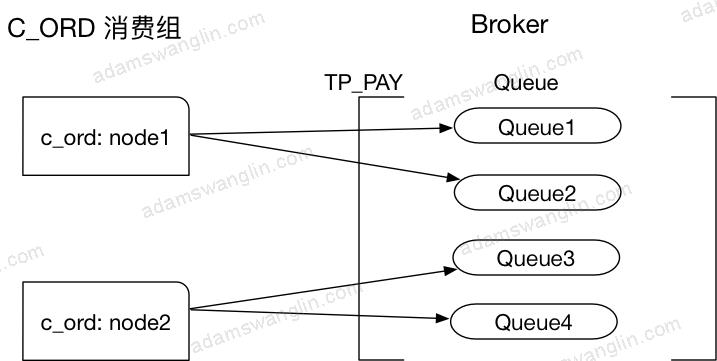
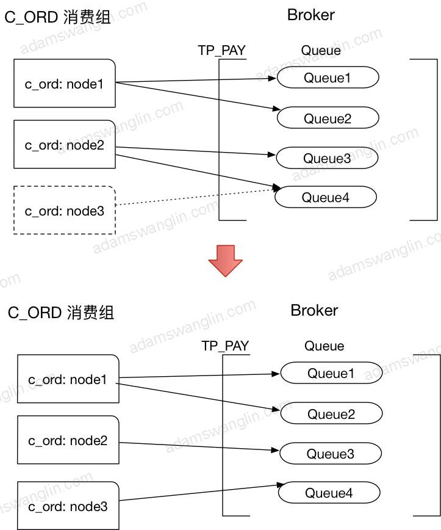

本文介绍RocketMQ消费者；包括消费者启动，消费消息流程和其中的要点等。
关于rocketmq-client包
RocketMQ将producer，consumer和admin相关代码都放到rocketmq-client jar包里；RocketMQ的采用客户端拉的方式消费消息（PUSH也是通过客户端拉来实现的），拉取的时候要考虑负载均衡（rebalance），考虑消息至少消费一次（offset管理）；等等这些导致了consumer的复杂度是client里面最高的。
Consumer三个重要部分
负载均衡
负载均衡状态

假设上面是运行一段时间的状态，C_ORD消费组有两个节点node1和node2，订阅了topic：TP_PAY，Broker为TP_PAY建立了四个Queue，node1消费Queue1和Queue2，node2消费Queue3和Queue4。
Rebalance过程
客户端每20s会启动rebalance，节点rebalance过程是：
需要说明的是以上过程，各个节点都是分别进行的。
节点变动
实际中节点会上下线，节点数量会发生变动，Topic配置的queue数量也可能变动（Broker配置变更或者上下线）。这时候Rebalance过程中各个消费节点消费的queue就会发生变动。
考虑上面平衡状态下，C_ORD消费组中新增了节点node3：
node3启动的时候会Rebalance，发现自己应该订阅Queue4；因为node3从没有订阅到订阅了Queue4，订阅内容有变，所以会node3立即发送心跳给Broker并且其中subVersion是当前时间戳；Broker发现心跳中的时间戳有更新会立即发送NOTIFY_CONSUMER_IDS_CHANGED的指令给node1和node2；node1和node2收到指令会立即Rebalance。只要同一个消费组的订阅信息一致，分配算法一致，最终queue会被同一消费组的节点平均分配。最终变化如下：

负载均衡算法有：
AllocateMessageQueueAveragely
AllocateMessageQueueAveragelyByCircle
AllocateMessageQueueConsistentHash
AllocateMessageQueueByMachineRoom
AllocateMessageQueueByConfig
默认是AllocateMessageQueueAveragely；例如5个queue分给3个节点，5/3=1，则平均消费1个；5%3=2，头两个节点再额外加一个；最后的结果是{1,2} {3,4} {5}。
消息拉取
PULL OR PUSH
consumer分pull consumer和push consumer。
- pull：应用自己拉取，消息延时较大。
- push：发送异步拉取消息的请求给Broker；如果当时有未消费的消息Broker立即返回未消费消息，如果没有未消费的消息，Broker在有新消息的时候返回新消息。push类型的consumer实现中的异步拉取消息的请求实际也是客户端pull消息；使用这种实现方式减轻了Broker的负担（Broker通过请求就知道新消息发给谁），但也增加了客户端的复杂度（负载均衡在客户端实现）。
我们使用的都是pushConsumer，一下只考虑pushConsumer的启动。
BROADCASTING OR CLUSTERING
consumer的消费模型分为BROADCASTING（广播模式）和CLUSTERING（集群模式）。
-
广播模式：对于某一条消息，同一消费组里每个节点都会收到。
-
集群模式：对于某一条消息，同一消费组里只会有一个节点收到。
广播模式和集群模式只针对单个消费组；不同消费组之间的消息订阅是互不影响的。
Offset管理
为了确定消息是否到达，现有消息队列实现里都有ack机制。
例如在ActiveMQ里，一条消息从producer端发出之后，一旦被consumer消费，consumer会返回ACK，broker端会删除这条已消费的消息。这样每一条消息消费都要传送一个ACK消息，Broker端也要根据ACK做相应操作。
RocketMQ用Offset机制来实现ACK，它类似一种批量的ACK：
-
在Broker端，消息的Offset是递增的；
-
Client端拉取的时候也是按顺序拉取的，比如第一次拉取offset 0开始的消息，拉取了10条，第二次就从上次最后一个节点offset+1的位置拉取；
-
Client消费一批消息后将消费完成的Offset发送给Broker。
RocketMQ这样做之后提升了效率：Offset更新频率相比单条更新小，Broker端只用存储某个消费组对某个Queue的消费进度而不用在每个消息上存某个消费组是否消费了该消息。
但同时也带来了一个问题：更大几率的重复消费。消费组消费了offset =2到offset=10的消息，但是offset=1的消息消费的比较慢；如果更新offset=10可能会导致offset=1的消息未成功消费Broker却认为成功，所以RocketMQ的做法是消费端更新的Offset都是未消费消息的最小offset；如果这时候消费端down机，别的消费组消费的时候会从offset=1的消息开始拉取消费，这样offset=2和offset=10的消息就会重复消费。所以RocketMQ不保证消息不重复，当然这只是造成消息重复消费的一个原因。
Consumer启动
几个重要的类关系

PullMessageService
启动拉取消息线程类
RebalanceService
启动定时任务Rebalance类
MQClientInstance
一般一个应用一个
DefaultMQPushConsumerImpl
一个consumerGroup一个，和MQClientInstance是多对一关系
RebalanceImpl
和pull/push模式有关，所以具体的rebalance实现挂在DefaultMQPushConsumerImpl下面。
启动详细流程
启动DefaultMQPushConsumerImpl
获取/创建MQClientInstance
MQClientInstance和clientId一一对应，一般一个应用只会有MQClientInstance，规则是{ip}:{pid}。
创建MQClientAPI
封装了远程调用Broker和NameServer的API。包括推送消息，拉取消息，在Broker上创建消费组等。
创建PullMessageService
1 | public class PullMessageService extends ServiceThread { |
其中ServiceThread是对线程的封装，RocketMQ中很多XXService类都继承自ServiceThread。
ServiceTask实现程序开启，停止，等待特定时长执行，中途任意时间唤醒等。
截取部分代码如下：
1 |
|
能看到PullMessageService的作用是启动一个线程，不停的从queue里拉取请求并执行pullMessage方法。
创建RebalanceService
1 | public class RebalanceService extends ServiceThread { |
RebalanceService的作用就是启动一个线程，定时调用doRebalance方法。
创建PullApiWrapper
拉取消息请求和响应的wrapper；主要作用：请求的时候封装RPC请求体，响应的时候二次过滤tag。
说二次过滤是因为Broker会过滤一次tag，但是为了效率broker过滤tag是按存放的tag的hashCode做比较的，不保证tag字符串一致。
PullApiWrapper做二次过滤保证获取的的tag和订阅的tag字符串匹配。
启动ConsumeMessageConcurrentlyService
消息消费处理类，这里是并发处理消息；对应的还有ConsumeMessageOrderlyService，顺序处理消息类。
除了处理下消息外，还负责启动线程定时清除消费开始15分钟还未处理完成的消息（发送回Broker重试）。
启动MQClientInstance
启动netty客户端；启动拉取消息服务；启动rebalance服务；启动定时任务：定时向Broker发送心跳，定时拉取路由信息，定时发送offset到Broker，定时调整消费线程池大小。
registerConsumer
DefaultMQPushConsumerImpl是一个consumerGroup一个实例，MQClientInstance一个应用一个实例；两者一对多，注册指DefaultMQPushConsumerImpl放入MQClientInstance中的ConcurrentMap<String/* group */, MQConsumerInner>中。
updateTopicRouteInfoFromNameServer
立即更新一次订阅的topic的路由信息。
checkClientInBroker
随机选择一个Broker，发送检查客户端配置配置的请求。
sendHeartbeatToAllBrokerWithLock
立即向所有相关Broker（订阅的topic的路由到的Broker）的master节点发送心跳。
rebalanceImmediately
立即执行一次rebalance。
PushConsumerRebalance
Consumer拉取消息
拉取消息的流程示意
图中小人代表有特定线程处理任务；黄色箭头代表PullRequest的流向。
RebalanceService初始化PullRequest
client启动
RebalanceService确定consumer拉取的queue。
- 为需要拉取的queue生成一个ProcessQueue用来保存正在/等待处理的信息，放入processQueueTable中。
- 为需要拉取的queue生成一个PullRequest，放入PullRequestQueue中；其中，拉取消息的位置从nextOffset从Broker远程拉取。
定时Rebalance
- 如果发现有新订阅的queue，也会为每个新增订阅的queue生成一个PullRequest，放入PullRequestQueue中；其中，拉取消息的位置从nextOffset从Broker远程拉取。
- 如果发现有queue已经不订阅了，更新offset到Broker，将ProcessQueue设为dropped并从processQueueTable中移除。
PullMessageService取出PullRequest
PullMessageService启动一个线程不停的从PullRequestQueue里取出PullRequest。如果取出的PullRequest是已失效的（ProcessQueue是否dropped），丢弃；如果未失效，执行下面步骤。
PullMessageService发送异步请求
PullMessageService取出PullRequest后，根据其中的queue定位Broker，并发送异步拉取请求。同时将PullRequest封装在PullCallback里，PullCallback封装在ResponseFuture里；并以自增的请求id为键，ResponseFuture为值放入ResponseTable中。
Broker发送异步响应
Broker收到请求，如果offset之后有新的消息会立即发送异步响应；否则等待直到producer有新的消息发送后返回或者超时。
如果通信异常或者Broker超时未返回响应，nettyClient会定时清理超时的请求，释放PullRequest回到PullRequestQueue。
NettyClient处理响应
根据响应id从ResponseTable中取出ResponseFuture；从响应里取出最新的offset和批量拉取到的消息。
用最新的offset更新ResponseFuture里的PullRequest并推送给PullRequestQueue里以进行下一次拉取。
批量拉取到的消息分批推给consumeExecutor线程处理。
拉取消息的详细流程
几点说明
-
拉取到的消息分批用consumerExecutor线程池执行，如果线程池满了5s后重试。
-
每批消息里消费失败的消息会重发给broker的重试队列，重发也失败的消息5s后用consumerExecutor重新消费。
-
每批消费完成后更新offset到Broker。
-
异步收到消息后，消息会分queue放到ProcessQueue中，ProcessQueue里的msgTreeMap：TreeMap<Long/offset/, MessageExt>存放消息；收到的消息处理成功或者处理失败已发回重试会从treemap里移除。几点需要注意：
1.每次更新offset到Broker都是从treemap里取第一条（最小offset），某条消息消费超时会导致Broker的offset无法更新；当某条消费超过15分钟还未消费完成，会发回Broker尝试重试。
2.treemap里堆积的消息超过1000（可配）条或者最小最大offset相差超过2000（可配）会触发控流，延迟拉取消息。
-
关于消息重复：
RocketMQ不保证消息不重复，如果你的业务需要保证严格的不重复消息，需要你自己在业务端去重。
-
关于消息消费顺序：
RocketMQ有严格顺序消费的实现。但是有序消费会影响消息并行处理效率，消费端吞吐量下降；而且单条消息阻塞会阻塞这个消费端；所以我们并没有使用消息顺序消费。
Consumer关闭
1 | //DefaultMQPushConsumerImpl - shutdown |
1 | synchronized (this) { |